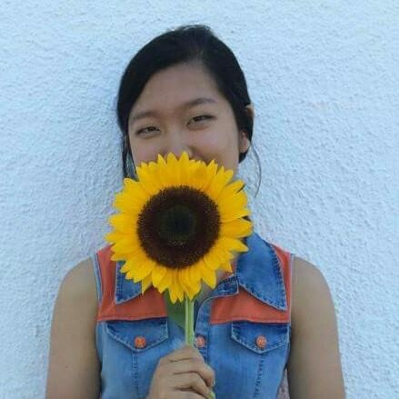

Welcome to my portfolio!

Hi, I'm Ying. I like to make things. I just recently found content strategy and am
intruiged by what it means and how I can apply it in my career after school, in making things.
Designing for communication is an art form, and something I hope to become better at in the future.
Please check out the images and links below for my content samples in media, writing, coding, and visual design. Thanks!
Also check out my
LinkedIn &
Resume!
Mock company that sends students to space.
Went for smooth and subdued looks. Home, students, & for kids pages functioning.
Simple HTML & CSS. Designed for easy navigation and interface.
Example photography portfolio exploring smooth transitions and
changes in monitor size. Color scheme & contrasts played up. HTML, CSS
& Jquery. Played with interactive click elements.
Cross-media project, exploring physicality of one of my poems
through changing, animated words & smooth transitions. HTML/CSS/Javascript.
Interested in future cross-media projects
Mock company that sells online security.
(group video, individual websites).
Looked at intuitive animations & links in narrative form. HTML/CSS/Javascript.
Explored story telling through pages.
Poem with illustration: loading affect into the un-affected,
Love letter to a sunflower. Explored visceral-ness with physical form.
Combined strengths of mediums to explore visual cohesion.
Simple logo design for campus club.
Non-profit donating stethoscope to medical students.
Form & social media format considered. Distributed across campus and running events.
Copyediting and design practice: B2B deliverable for socially-oriented
startup focusing on hiring technology professionals. Received group feedback for changes.
Created a company culture book with the help of co-workers and supervisors.
Summer long project integrating into workplace culture, with visual problem solving.
Podcast on stress in college. Reiterations of podcast format with feedback.
Went through storyboard process, peer feedback, & multiple stages of reiteration.
Newsletter sent out as technology director, engaging college audience with relevant content and language for understanding. Other example
here.
Writing sample: explaining business law concept of partnerships written for college students, given freedom to explain technical language.
Essay on Beyonce as a feminist, general audience. Extensive background research, emphasizes Beyonce's evolution in clear & concise writing.